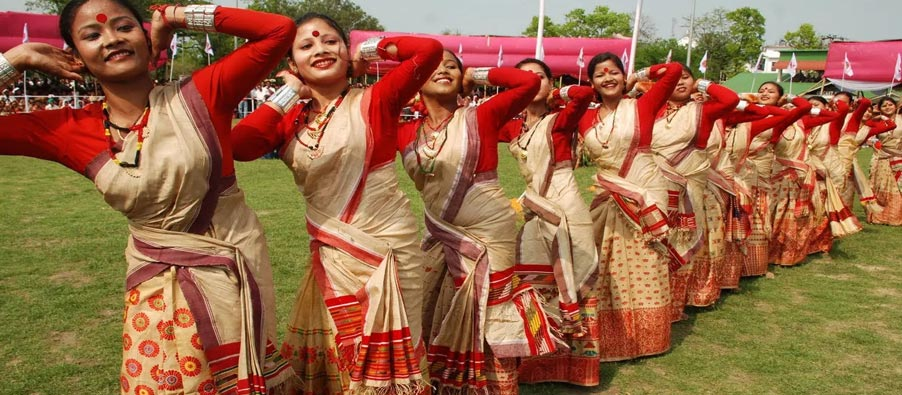

Welcome to Assam!

Assam, situated in northeastern India, is renowned for its rich cultural heritage, lush landscapes, and vibrant
traditions. The culture of Assam is a fascinating blend of indigenous tribal customs, Assamese traditions, and
influences from neighboring regions.
Festivals play a pivotal role in Assam's cultural calendar, with Bihu being the most important. Celebrated thrice
a year—Rongali Bihu (spring), Bhogali Bihu (harvest), and Kongali Bihu (autumn)—Bihu festivities feature
traditional dances like Bihu dance and songs known as Bihu Geet. These celebrations mark agricultural cycles,
cultural harmony, and communal bonding.
Assamese cuisine is diverse and flavorful, known for its use of rice, fish, and fresh vegetables. Staple dishes
include Assam Tea, Masor Tenga (sour fish curry), and Pitha (rice cakes). Assam's cuisine reflects its agrarian
lifestyle and the abundance of natural resources.
Music and dance are integral to Assam's cultural identity, with classical forms like Sattriya dance, performed in
Vaishnavite monasteries, and folk dances like Jhumur and Ojapali depicting tales of love, valor, and rural life.
The Borgeet, devotional songs composed by Srimanta Sankardeva, are also significant in Assamese music.
Assam's architectural heritage includes ancient temples like Kamakhya Temple, dedicated to the Goddess Kamakhya,
and the Ahom-era monuments such as Rang Ghar and Kareng Ghar in Sivasagar, which showcase the state's historical
and religious prominence.
The state's natural beauty is exemplified by its tea gardens, wildlife sanctuaries like Kaziranga National Park
(famous for one-horned rhinos), and the mighty Brahmaputra River. Assam's eco-tourism opportunities attract nature
enthusiasts and wildlife photographers from around the world.
Handicrafts such as Assamese silk (including Muga and Eri silk), bamboo and cane products, and traditional
Assamese jewelry like Gam Kharu (bangles) and Jon Biri (necklaces) highlight the artistic skills and cultural
heritage of Assam's artisans.